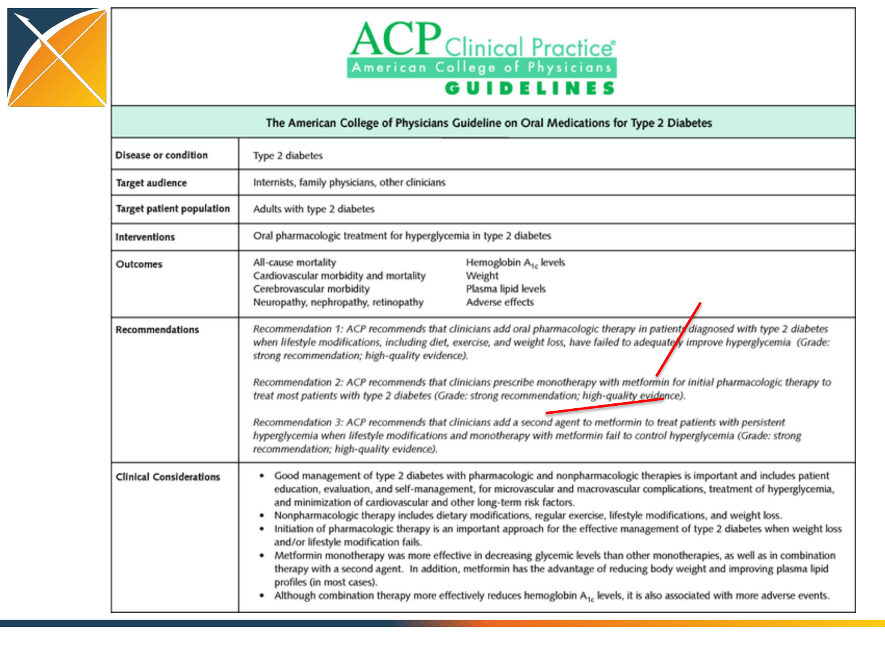

OHDSI in action:
Real-world evidence for
clinical characterization
George Hripcsak, MD, MS
Research Goal
•Generate evidence
–Randomized trial is the gold standard
–Observational research seen as supporting

Observational Data & Clinical Trials
•Sample size calculations
–Do we have enough patients to carry out a trial?
•Recruitment
–Find patients or their clinicians from EHRs
•Pragmatic trials: recruitment and data collection
–ADAPTABLE aspirin trial
…
•Complementary causal evidence (future)
–New methods to handle confounding and ascertain
causes from retrospective observational databases

Characterization
•Today we carry out RCTs without clear
knowledge of actual practice
–Compare treatments within a medical center or
several medical centers without knowing what is
used in the centers or outside of them

Characterization
•There will be no RCTs without an observational
precursor
–It will be required to characterize a population using
large-scale observational data before designing an RCT
–Disease burden
–Actual treatment practice
–Time on therapy
–Course and complication rate
–Done now somewhat through literature and pilot
studies
•How do the proposed centers differ from the rest
of the world?
Research on generalizability
•Set of all RCTs (ClinTrial.gov) as a distribution
(Weng ACI 2014)

Causation
Similar leaps:
•Observational associations -> Causes
•RCT-based causes -> Individual treatment
1. Study population -> Local population
•Characterization
2. Local population -> Individual
•Precision medicine
–Are the same causes operative, confounders, etc.
–That is, if deriving causes from observational data
is futuristic, then so is using RCT results
(Fuller 2015)

Characterization
•What do we need to study?
–Disease burden, current practice, complication rate
•Interactive design (cost of adding exclusions)
–Fine details in designing my study (age 62 or 65)
•Effect size and variance
–How many study subjects do we need?
•Will the result generalize
–Do patients here look like patients at study site?
–Do observational results on the study population
match observational results on the local population

Treatment Pathways
•In literature
–Recommended sequence of treatments
•How are patients actually treated?
–Sequence of medications each patient took

Treatment Pathways
•Stakeholders
–Clinician
–Patient
–Family
–Public
–Consultants
–Field
–Industry
–Regulator
•Evidence
–Randomized trials
–Observational studies
–Experience
•Conduits
–Literature
–Lay press
–Social media
–Formulary
–Guidelines
–Drug product label
–Advertising
–Electronic health record
–Direct interaction
•Decision inputs
–Clinical course
–Feasibility of administration
–Cost
–Preference
Treatment Pathways
Public
Industry
Regulator
Academics RCT, Obs
Literature
Lay press
Social media
Guidelines
Formulary
Labels
Advertising Clinician
Patient
Family
Consultant
Indication
Feasibility
Cost
Preference
Local stakeholders
Global stakeholders Conduits
Inputs
Evidence

Treatment Pathways
•Defining a pathway
–What the clinician orders
–What prescriptions the patient fills
–What the patient takes

Network-based Research
•International network of researchers
–Data holders
–Standards developers
–Methods developers
–Clinical researchers
•Large-scale collaborative research
–Larger sample sizes
–More diverse population
–Greater expertise
Open-source process
1. Join the collaborative
2. Propose a study to the open collaborative
3. Write protocol
–http://www.ohdsi.org/web/wiki/doku.php?id=research:studies
4. Code it, run it locally, debug it (minimize others’ work)
5. Publish it: https://github.com/ohdsi
6. Each node voluntarily executes on their CDM
7. Centrally share results
8. Collaboratively explore results and jointly publish
findings

OHDSI in action:
Chronic disease treatment pathways
•Conceived at AMIA
•Protocol written, code
written and tested at 2
sites
•Analysis submitted to
OHDSI network
•Results submitted for 7
databases
15Nov2014
30Nov2014
2Dec2014
5Dec2014

Condition definitions
Disease
Medication classes
Diagnosis
Exclusions
Hypertension (“HTN”)
antihypertensives, diuretics,
peripheral vasodilators, beta
blocking agents, calcium
channel blockers, agents acting
on the renin
-angiotensin
system (all ATC)
hyperpiesis (SNOMED)
pregnancy observations
(SNOMED)
Diabetes mellitus, Type 2
(“Diabetes”)
drugs used in diabetes (ATC),
diabetic therapy (FDB)
diabetes mellitus (SNOMED)
pregnancy observations
(SNOMED), type 1 diabetes
mellitus (MedDRA)
Depression
antidepressants (ATC),
antidepressants (FDB)
depressive disorder
(SNOMED)
pregnancy observations
(SNOMED), bipolar I disorder
(SNOMED), schizophrenia
(SNOMED)

1. Metformin
2. Second agent
Treatment pathway event flow
Protocol
OHDSI participating data partners
Code
Name
Description
Size (M)
AUSOM
Ajou University School of Medicine
South
Korea; inpatient hospital
EHR
2
CCAE
MarketScan Commercial Claims and
Encounters
US private
-payer claims
119
CPRD
UK Clinical Practice Research Datalink
UK;
EHR from general practice
11
CUMC
Columbia University Medical Center
US; inpatient EHR
4
GE
GE Centricity
US;
outpatient EHR
33
INPC
Regenstrief
Institute, Indiana Network for
Patient Care
US;
integrated health exchange
15
JMDC
Japan Medical Data Center
Japan; private
-payer claims
3
MDCD
MarketScan Medicaid Multi
-State
US; public
-payer claims
17
MDCR
MarketScan Medicare Supplemental and
Coordination of Benefits
US; private
and public-payer
claims
9
OPTUM
Optum ClinFormatics
US; private
-payer claims
40
STRIDE
Stanford Translational Research Integrated
Database Environment
US; inpatient
EHR
2
HKU
Hong Kong
University
Hong Kong; EHR
1

Strict criteria
•250,000,000+ patient records to start
•4 years continuous observation
•(first treatment for disease)
•3 years continuous treatment
•327,110 type 2 diabetes mellitus
•1,182,792 hypertension
•264,841 depression
•Sequential and simultaneous are mixed

Publication in revision
•Submitted for publication
–Policy of open sharing pre-publication
–Will share more details on publication

Comments
•Will see a day when funding an RCT requires
an extensive observational study
–Characterization
•Future work
–Causal assessment
–Foundation for interpreting trials
Collaborators
George Hripcsak
Columbia
University Medical Center, New York, NY, USA
Patrick
B Ryan
Janssen Research & Development, LLC, Titusville, NJ, USA
Jon
D Duke
Regenstrief
Institute, Indianapolis, IN, USA
Nigam
H Shah
Stanford
University, CA, USA
Rae
Woong Park
Ajou
University School of Medicine, Suwon, Republic of Korea
Vojtech
Huser
NIH Clinical Center, Bethesda, MD, USA
Marc
A Suchard
David
Geffen School of Medicine, Uni. of California, Los Angeles, CA, USA
Martijn
J Schuemie
University
of Hong Kong, Hong Kong; Janssen Research & Development, LLC, Titusville, NJ, USA
Frank
DeFalco
Janssen Research & Development, LLC, Titusville, NJ, USA
Adler Perotte
Columbia University Medical Center, New York, NY, USA
Juan Banda
Stanford University, CA, USA
Christian
G Reich
AstraZeneca PLC, Waltham, MA, USA
Lisa Schilling
University of Colorado School of Medicine, Aurora, CO, USA
Michael Matheny
Tennessee Valley Healthcare System VA, Nashville, TN, USA
Daniella
Meeker
University of Southern California, Los Angeles, CA
Nicole
Pratt
University
of South Australia, Australia
David
Madigan
Columbia
University, New York, NY, USA